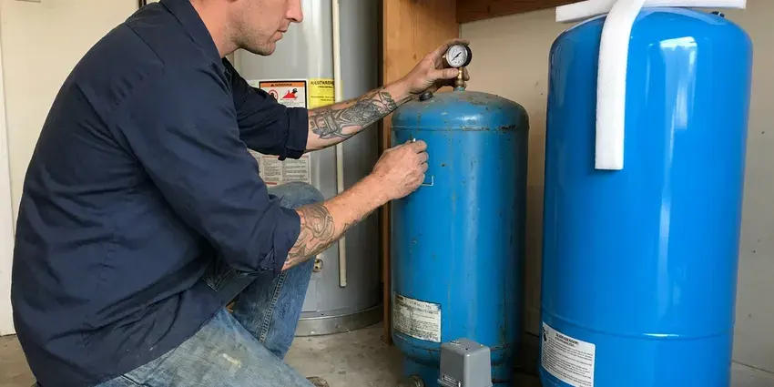

Sump Pump Replacement in Indio, CA
We replace failed sump and effluent pumps across Indio, CA with cast iron Zoeller and Liberty models built for heavy use.
- Fast Pump Replacements
- Storm Season Readiness
- Expert Technicians
- Lifetime Workmanship Warranty
Get Your Sump Pump Replaced Today in Indio, CA.
Protect your home from water damage with a reliable sump pump replacement from our team.
Sump Pump Replacement in Indio, CA for Basements and Drainage Pits
FKM Plumbing specializes in professional sump pump replacement, keeping your home's foundation dry and protected from water damage. A warm, dry climate is the main factor for plumbing in Southern California, with long irrigation seasons and year-round demand on outdoor lines. A working sump pump is crucial for many Indio homes, especially those with basements or crawl spaces.
Our expertise includes:
- Replacement of pedestal, submersible and battery-backup units.
- Emergency Sump Pump Services
- Pedestal and Submersible Pump Experience

Additional Plumbing Replacement Services in Indio, CA
When repairs are no longer enough, our replacement services in Indio, CA deliver modern, efficient equipment installed right.


Customers
Why Choose FKM Plumbing for Sump Pump Replacement in Indio, CA?
Many sump pumps sit idle for weeks or months, then must work hard during sudden storms. That makes a reliable pump and float switch essential.
- Quality Pumps, We install cast iron pumps with heavy-duty switches from trusted brands.
- Tested Operation, We fill the pit and verify the pump cycles correctly before leaving.
- Proper Sizing, We match pump capacity to pit volume and how high the water must be lifted.
Citywide Coverage
Our extensive service coverage means that Indio residents can count on FKM Plumbing for quick response times when a sump pump emergency arises. We help protect homes from flood damage across the entire Indio region.
Experienced Team
Every plumber at FKM Plumbing is skilled in the details of sump pump replacement, from proper pit excavation to electrical hookups and discharge line routing. We provide a professional and lasting installation every time.
Safety-First Approach
Safety and code compliance are paramount in every sump pump replacement project we take on. We closely follow all local Indio and state plumbing codes, so your new installation is safe and legal.
Trusted Certified Indio Plumbing Services Professionals
At FKM Plumbing, we take pride in providing certified plumbing services throughout Indio, CA. Backed by leading industry credentials, our experienced plumbers combine technical skill with genuine customer care. Whether it is repair, installation, or maintenance, we follow strict safety and quality standards to deliver long-lasting results you can trust.
Call Us Now PHCC Plumbing Contractor Recognition
PHCC Plumbing Contractor Recognition Better Business Bureau (BBB) Accreditation
Better Business Bureau (BBB) Accreditation Angi Certified Pro
Angi Certified Pro ISO 9001 Quality Management Certification
ISO 9001 Quality Management CertificationProfessional Sump Pump Replacement Services in Indio, CA
Submersible Sump Pump Replacement in Indio
Submersible sump pumps are popular in Indio for their quiet operation and ability to sit fully submerged in the sump pit. When replacing a submersible pump, we carefully remove the old unit, clean the pit and install a new, properly sized pump. We make sure the check valve and discharge piping are correctly connected to prevent backflow and maximize efficiency. That is key for handling heavy rainfall.

Battery Backup Sump Pump System Installation in Indio
When heavy winter storms do arrive, runoff can overwhelm yard drains and storm systems, and burn areas can send mud into low-lying homes. Power outages during severe storms can leave standard sump pumps useless. Our battery backup sump pump system installation in Indio provides an essential layer of protection. We add a secondary, battery-powered pump that automatically activates if the primary power fails, keeping flood protection running even without electricity. This is a vital upgrade for many homes.
Sump Pump Basin and Pit Replacement in Indio, CA
Sometimes it is not just the pump that needs replacing, since the sump basin or pit itself may be cracked, damaged or too small. FKM Plumbing offers sump pump basin and pit replacement in Indio, CA so your entire system functions as it should. A properly sized and intact pit is important for the efficient operation and longevity of your new sump pump.
Sewage Ejector Pump Replacement in Indio
Basement bathrooms and laundry rooms below the sewer line need sewage ejector pumps instead of sump pumps. These pumps handle solids and must be installed in sealed, vented basins. We replace ejector pumps with models rated for two inch solids. We also check the basin seal, vent and discharge check valve. Proper installation prevents sewer gas odors.
Battery Backup Sump Pump Installation in Indio
Power outages during severe storms can leave a primary sump pump useless, leading to basement flooding. A battery backup sump pump offers important protection during these times. We install and replace complete battery backup systems, including dedicated marine-grade batteries and smart charging units. Our team helps you select a system with sufficient run-time to protect your Indio home through extended power interruptions. That gives you peace of mind when the lights go out.
Emergency Sump Pump Replacement in Indio, CA
A sudden sump pump failure can lead to quick flooding, especially during heavy rainfall. FKM Plumbing offers emergency sump pump replacement in Indio, CA to address urgent situations. Our rapid response team will diagnose the problem and replace your faulty pump with a new, reliable unit. We work to minimize water damage and restore your peace of mind as quickly as possible.
Yard Drainage Pit Pumps in Indio, CA
Some properties use pumps in yard drainage pits or below-grade window wells to handle storm runoff. These pumps may sit idle for months, then fail when they are needed most. We replace them with corrosion-resistant models and clear debris from the pit. We can route discharge away from foundations and onto approved areas. Regular testing before storm season is a smart habit.

Combination Sump Pump System Replacement in Indio, CA
For added protection, many homeowners in Indio choose a combination sump pump system, which pairs a primary electric pump with a battery backup pump in one unit. This keeps the system running even if the power fails or the primary pump malfunctions. FKM Plumbing can replace your existing combination system or install a new one, evaluating your needs for groundwater management. We make sure the components are properly matched for strong performance and longevity.
Sump Pump Replacement Near Me in Indio, CA
When you search for sump pump replacement near me in Indio, CA, FKM Plumbing is your local expert. We are familiar with the water drainage and soil conditions that affect homes in the area, providing tailored solutions.
Our local presence means we can respond fast to your sump pump replacement needs, limiting the risk of water damage to your home. We aim to be the trusted local experts for sump pump services throughout Indio, always ready to deliver professional and efficient solutions.
FKM Plumbing at a Glance
- Fully licensed plumbing team covering Indio, CA
- 24/7 emergency service with same-day scheduling
- Clear written estimates, no hidden fees
- 4.8-star rated by 754+ Southern California customers
Indio Map
Indio Information
- Population
- 93,057
- Area codes
- 760/442/951
- Service area
- Indio and communities within 40 miles
- Nearby
- Hemet, Temecula, Menifee, Murrieta
When heavy winter storms do arrive, runoff can overwhelm yard drains and storm systems, and burn areas can send debris into low-lying homes. A reliable sump pump is essential for many Indio, CA homes to protect against basement flooding and expensive water damage.
Expert Services
Trust our professionals for reliable FKM Plumbing solutions in Indio, CA.
Our Specialized Plumbing Services in Indio, CA
At FKM Plumbing, we provide a complete range of plumbing services across Indio, CA. From leak detection to full system installations, our team ensures fast, precise, and affordable service for both residential and commercial properties. Explore our core services below:


How Our Sump Pump Replacement Process Works in Indio, CA
At FKM Plumbing, our sump pump replacement process is simple and designed for efficiency, with minimal disruption to your Indio home.
Request a Quote
Call (213) 871-0701 and describe your pump and pit. We schedule a visit and provide a clear price.
Inspect the Pit
We check pit size, discharge line and electrical supply. We choose a pump and switch that fit.
Install and Test
We install the new pump and check valve, then fill the pit to test operation. We confirm proper discharge and alarm function.
Frequently Asked Questions About Sump Pump Replacement in Indio
A standard sump pump replacement typically costs $500 to $1,200 installed. Battery backup systems usually add $800 to $1,800. Sewage ejector pumps usually cost $1,200 to $2,500.
Most sump pump replacements take one to two hours. Battery backups or new discharge lines take a bit longer.
Most standard sump pump replacements can be completed within 2 to 4 hours. More complex installations, such as those requiring new pit excavation or major discharge line work, might take longer, up to a full day.
A primary sump pump is your main defense against basement flooding, powered by your home's electricity. A backup sump pump, usually battery-powered or water-powered, is a secondary system that kicks on if the primary pump fails, loses power or cannot keep up with heavy water inflow. Many Indio homes are better off with a backup system due to storm risks.
Yes, in addition to replacement, we offer sump pump maintenance services to keep your system ready. Regular maintenance, including cleaning the pit, checking the float switch and inspecting the discharge line, can extend the life of your pump and prevent surprise failures. This is especially important for homes in Indio that rely heavily on their sump pumps.
While it may seem straightforward, professional sump pump replacement is highly recommended. It involves electrical connections, proper plumbing for the discharge line, and making sure the pump is correctly sized and installed to prevent future flooding and comply with local Indio codes.
A battery backup sump pump system is a secondary pump powered by a battery, designed to turn on automatically if your primary sump pump loses power during an outage or fails. This is critical for maintaining flood protection during power outages caused by severe weather.
In many areas, minor like-for-like sump pump replacements typically do not require a permit. However, if the replacement involves significant changes to the electrical system, discharge piping or the sump pit itself, a permit might be necessary. Our team will advise you on local code requirements in Indio.
What People Are Saying About Our Plumbing Experts?

Mark T.
When our office needed drain cleaning, FKM Plumbing provided quick, reliable service. The plumber arrived on time and made sure every drain flowed perfectly before leaving. Very satisfied.
Drain Cleaning · Murrieta, CA
James P.
Our commercial plumbing system had a leak under the sink, and FKM Plumbing handled it professionally. The plumbers arrived quickly and restored everything without disruption to our customers.
Commercial Plumbing · Perris, CARobert G.
The trenchless sewer replacement saved our front yard. They walked us through the camera inspection footage first so we knew exactly what we were paying for.
Sewer Line Replacement · Moreno Valley, CA
Emily R.
I called FKM Plumbing for plumbing repair, and the technician was fast, polite, and thorough. They explained the problem clearly and fixed it the same day. I will definitely hire them again. Highly recommended!
Plumbing Repair · Moreno Valley, CA
Daniel K.
A pipe burst at 11 pm and they actually answered. The plumber showed up within the hour, shut everything down, and had us back to normal the next morning. Could not ask for more.
Emergency Plumbing · Hemet, CA
Sofia M.
Two new toilets installed in one visit, no mess left behind, and the tech even adjusted a faucet he noticed was dripping. Fair pricing and really friendly.
Toilet Installation · Hemet, CA